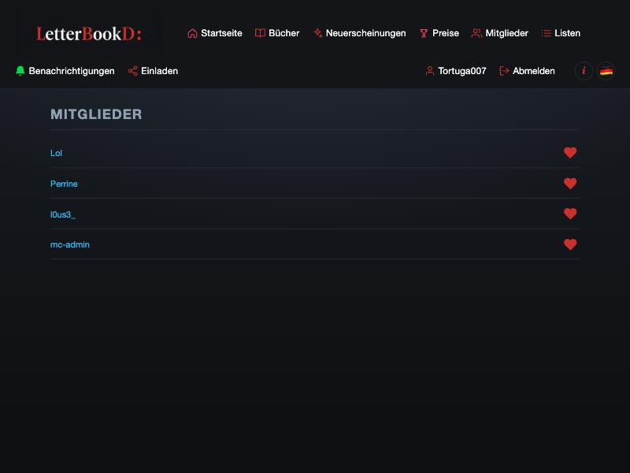

Mitglieder
Wozu es dient: Die Menschen in deinem Club im Blick behalten: ihre Lektüren, Rezensionen und Listen sehen und über ihre neuen Lieblingsbücher auf dem Laufenden bleiben. Du siehst nur Mitglieder, mit denen du mindestens einen Club teilst.

Ablauf
Eine einfache Liste: eine Zeile pro Mitglied, der Name ist klickbar und öffnet das Profil. Rechts kannst du über ein Herz ein Mitglied als „gefolgt“ markieren. Das speist den Bereich „Mitglieder, denen ich folge“ auf deiner Startseite.
Mitglieder ohne gemeinsamen Club erscheinen hier nicht (Sichtbarkeitsregel von letterbookd).
Aktionsketten
Jede Zeile beschreibt einen Auslöser in der Oberfläche, das sich öffnende Modal/Formular und den erzielten Effekt.
| Auslöser | Modal / Felder | Effekt |
|---|---|---|
| Name eines Mitglieds | — | Öffnet das Profil des Mitglieds: seine Listen, Lektüren und Rezensionen, gefiltert auf die Clubs, die ihr gemeinsam habt. |
| Herz-Symbol rechts neben einem Mitglied | — | Folgt dem Mitglied bzw. entfolgt ihm. Ein gefolgtes Mitglied erscheint ganz oben auf deiner Startseite („Mitglieder, denen ich folge“), und du erhältst seine neuen Rezensionen bevorzugt in den Benachrichtigungen. |